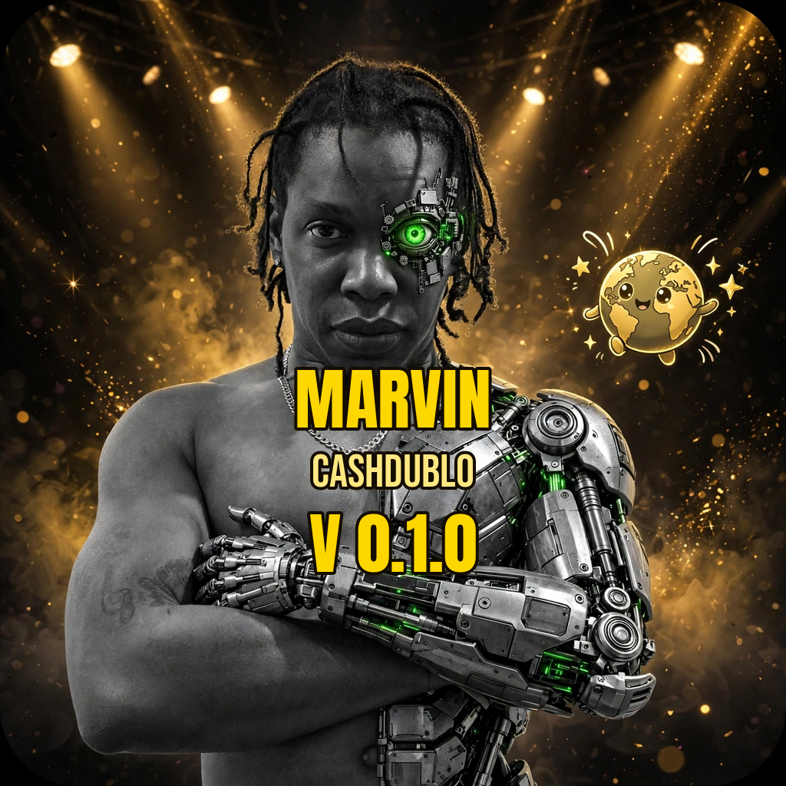
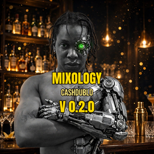
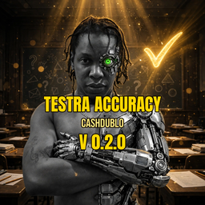
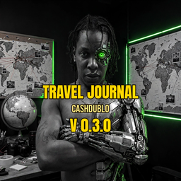

VoiceModel
Create a personal voice from audio you own or have permission to use. The repository says backend fetching, training and voice generation are not yet switched on.
App versions below are source versions read from each app repository's package.json on 2026-11-20. Apple2Player is marked UNVERIFIED because its Mac repository did not expose a package.json at the checked path. These are source repository versions, not proof of a published store release.
Explore the CashDublo catalogue. Availability and lifecycle status should be confirmed against each app's current repository and store listing.
Create a personal voice from audio you own or have permission to use. The repository says backend fetching, training and voice generation are not yet switched on.

VERSION: 0.1.0RELEASE: NOT VERIFIEDA playful bouncing globe character with expressions, jokes, photo comments based on supplied facts, favorites and a tuning workshop. The face-playground feature is still marked TBA in its README.
Organize geotagged photos on an interactive globe, with offline shelves and search, voice stories, privacy controls and encrypted photo backup.

VERSION: 0.2.0RELEASE: NOT VERIFIEDBrowse classic drinks and a 1,140-drink world collection, save your own recipes, and find drinks based on ingredients you have. The recipe book is designed to work offline.
An AI-assisted songwriting notebook that records takes and sessions, preserves your original lyrics, supports beat-loop recording, and offers lyric analysis and music-industry lessons.

VERSION: 0.2.0RELEASE: NOT VERIFIEDGenerate topic-based tests in different difficulty levels and sizes, answer several question types, then review your score and each correct answer. Test generation requires your own Anthropic API key.
An idea-capture and development project. Its repository currently flags legal clearance and security/privacy/IP assessment as incomplete; it is not production-cleared.
GO is listed as a CashDublo app for iOS and Android. Its repository README currently contains only platform information, so a fuller feature description needs confirmation.

VERSION: 0.3.0RELEASE: NOT VERIFIEDTravel Journal is listed as a CashDublo app for iOS and Android. Its repository README currently contains only platform information, so a fuller feature description needs confirmation.
SAY is listed as a CashDublo app for iOS and Android. Its repository README currently contains only platform information, so a fuller feature description needs confirmation.
A simple Android home-screen text-to-speech widget: paste or type text, then speak it using the phone's built-in TTS engine, including offline.
Player is the CashDublo music-player app and companion for Apple2Player playlist transfers. The current repository README needs a fuller feature summary.
An AI-oriented portfolio companion. Its repository README needs a current feature and readiness audit before the website makes more detailed claims.
Track an investment portfolio by importing CSV statements. The repository identifies this version as BETA; live market data, dividends, alerts, AI and premium flows are not all independently verified.
A Mac utility that sends Apple Music playlists and audio files to an Android phone over USB, prepares M3U playlists for Player, and includes a safe, backed-up music-tag repair workflow.